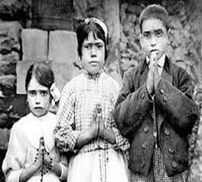
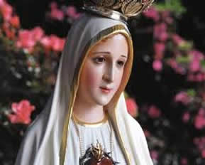
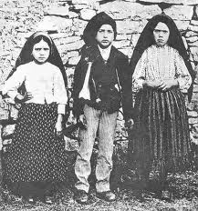
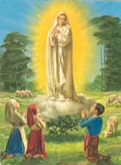
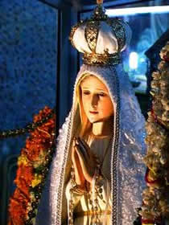
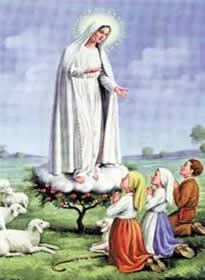

OS SEGREDOS DE NOSSA SENHORA DE FÁTIMA
O chamado Segredo de Fátima é um conjunto de revelações alegadamente revelado pela Virgem Maria a três crianças portuguesas: Lúcia de Jesus dos Santos, Francisco Marto e Jacinta Marto - os três pastorinhos. De maio a outubro de 1917, as três crianças reivindicaram ter testemunhado a aparição de "uma Senhora mais brilhante do que o sol" (que teria se apresentado como a Virgem Maria, mãe de Jesus, e que é hoje invocada como Nossa Senhora de Fátima).
Segundo a Irmã Lúcia, Nossa Senhora, em 13 de julho de 1917, teria revelado um Segredo constituído por três partes, de caráter profético. As duas primeiras partes foram reveladas em 1941 num documento escrito por Lúcia. A terceira parte foi escrita por Lúcia em 3 de janeiro de 1944, por ordem do bispo de Leiria, e revelada em 2000.
|  |  |  |
1º Segredo - A visão do inferno
Nossa Senhora mostrou-nos um grande mar de fogo que parecia estar debaixo da terra. Mergulhados neste fogo os demónios e as almas, como se fossem brasas transparentes e negras ou bronzeadas com forma humana, que flutuavam no incêndio levadas pelas chamas que delas mesmas saíam, juntamente com nuvens de fumo, caindo para todos os lados, semelhante ao cair das faúlhas em os grandes incêndios, sem peso nem equilíbrio, entre gritos e gemidos de dor e desespero que horrorizava e fazia estremecer de pavor. Os demónios distinguiam-se por formas horríveis e asquerosas de animais espantosos e desconhecidos, mas transparentes e negros. Esta vista foi um momento, e graças à nossa boa Mãe do Céu, que antes nos tinha prevenido com a promessa de nos levar para o Céu! Se assim não fosse, creio que teríamos morrido de susto e pavor.
2º Segredo - A punição do mundo
Em seguida, levantamos os olhos para Nossa Senhora que nos disse com bondade e tristeza:
Vistes o Inferno, para onde vão as almas dos pobres pecadores. Para as salvar, Deus quer estabelecer no mundo a devoção a meu Imaculado Coração. Se fizerem o que eu disser salvar-se-ão muitas almas e terão paz. A guerra vai acabar, mas se não deixarem de ofender a Deus, no reinado de Pio XI começará outra pior. Quando virdes uma noite, alumiada por uma luz desconhecida, sabei que é o grande sinal que Deus vos dá de que vai punir o mundo pelos seus crimes, por meio da guerra, da fome e de perseguições à Igreja e ao Santo Padre. Para a impedir virei pedir a consagr
ação da Rússia a meu Imaculado Coração e a Comunhão Reparadora nos Primeiros Sábados. Se atenderem a meus pedidos, a Rússia se converterá e terão paz, se não, espalhará seus erros pelo mundo, promovendo guerras e perseguições à Igreja, os bons serão martirizados, o Santo Padre terá muito que sofrer, várias nações serão aniquiladas, por fim o meu Imaculado Coração triunfará. O Santo Padre consagrar-me-á a Rússia, que se converterá, e será concedido ao mundo algum tempo de paz.
|  |  |  |
3º segredo de Fátima - Trata-se duma visão profética
O terceiro milagre ficou bem mais tempo guardado, vindo à tona somente no ano de 2000 com a divulgação oficial. Segundo a Igreja, o terceiro milagre teria ligação com o passado, com a luta espiritual travada nos anos 20 entre a Igreja Católica e a Rússia comunista.
Muitos pesquisadores, inclusive pertencentes à própria Igreja Católica, não acreditam que o terceiro milagre tem a ver com o passado, mas, em verdade, se refere ao futuro. A suspeita maior se deu em razão de se saber que existem dois textos escritos por Lúcia, escritos quando ela já havia se tornado freira. Outra questão impacta os pesquisadores sobre a terceira revelação: sabe-se que o Papa, quando tomou conhecimento do terceiro milagre, acabou chorando. É sensato concluir que se efetivamente o terceiro segredo tivesse relação com algo do passado, não haveria razão para tal sofrimento.
Veja o que Maria mostrou às crianças (3º segredo) e tire as suas conclusões se tal narrativa tem a ver com o conflito do passado (Igreja e Rússia) ou de algo futurista:
O Papa percorre uma grande metrópole em ruínas. Com ele seguiam alguns membros da Igreja Católica. Subindo uma montanha, a comitiva vê no alto uma cruz feita precariamente (dois paus amarrados). Diante da cruz, todos se ajoelham. Nesse momento, aparecem vários soldados, disparando suas armas contra o Papa e contra todos os outros. Não houve sobreviventes.
Talvez quando for divulgado o outro texto escrito por Lúcia sobre a terceira revelação, poder-se-á ter certeza do que efetivamente se tratou o terceiro segredo de Fátima. O certo pode-se concluir de antemão, é que ele tem a ver com futuro e não com o passado. Isso parece obvio a todos, até porque cada segredo previu acontecimentos ligados ao tempo linear: 1º e 2º guerras mundiais. Por que o terceiro segredo não teria essa mesma cronologia?
Ao que parece, essa última revelação de Fátima aponta para destruição da cidade-estado do Vaticano, como também do maior alicerce espiritual da Igreja, o Papa. Daí, sim, é possível entender a imensa tristeza do Papa ao tomar conhecimento dos fatos contidos na previsão.
A Irmã Lúcia faleceu no dia 13 de Fevereiro de 2005, aos 98 anos.
Somente no ano 2000 o papa decidiu revelar o terceiro segredo de Fátima, sendo que há especulações de que o papa ainda hoje não divulgou todo o 3º segredo ao mundo.
NOSTRADAMUS
É importante a referência do terceiro segredo de Fátima, pois na interpretação que faço acima pode ser também concluída quando se analisa as previsões de Nostradamus. Veremos porque.
Nascido no ano de 1503 e falecido em 1566, Nostradamus acabou se tornando um dos mais famosos videntes da história terrena. Ele fez mais de 1300 previsões, todas divididas em centúrias, cada qual com cem quadras (estrofes com quatro versos).
Uma previsão de Nostradamus, que bem poderia ter ligação com a mudança de era, diz respeito ao aparecimento de um planeta ou asteróide de grande proporção afetando o campo gravitacional da Terra. Nesse sentido, vale citar literalmente os versos contidos na quadra 17, Centúria 1:
Por 40 anos ele não aparecerá
Por 40 anos todos os dias se fará visto
A terra árida em seca crescerá
E grandes dilúvios quando for percebido
Na quadra II, Centúria 41, Nostradamus fala também de uma grande estrela que irá queimar o céu por sete dias e a nuvem fará aparecer dois sóis. Já na quadra III, Centúria 70, Nostradamus diz que haverá um eclipse solar mais obscuro e mais misterioso jamais visto desde a criação do mundo, e será tal que irá parecer que a Terra perdeu a sua capacidade gravitacional, ocorrendo extraordinárias mudanças e poderosos terremotos.
Há muito se fala, através de várias mensagens canalizadas, na chegada de um planeta desconhecido, por muitos chamados de Hercólubus, o qual afetará profundamente o campo magnético da Terra. Muita gente associa essa expectativa também aos versos de Nostradamus, especialmente os reproduzidos acima.
Ao que se sabe, pelo menos em termos oficiais, não há nenhum planeta ou asteróide em rota de colisão com a Terra. Mesmo assim, segundo a própria ciência, os corpos celestiais contemplam em si pouca iluminação, podendo passar despercebido (Isso foi comprovado quando em 02/03/09 um asteróide quase caiu na Terra e pouca cientista soube disso antes). Se um impacto de grande magnitude pudesse de fato acontecer, muitos maremotos aconteceriam, os chamados: “grandes dilúvios” por Nostradamus, além, é claro, de outros cataclismos.
Nossa senhora de Fátima pede a prática da reza do terço todos os dias, como um meio de salvação e uma forma de se aproximar de Deus.
Uma parte do terceiro segredo de Fátima:
Um homem de alta posição será assassinado, isso dará asa à guerra e à revolução. Será chamado um exército poderoso que marchará pela Europa adentro e a guerra atômica começará e destruirá tudo. Grandes nuvens após a explosão irão matar tudo. Haverá escuridão na Terra durante 72 horas. Um terço da humanidade que irá escapar às 72 horas de escuridão irá viver numa nova era. Serão pessoas boas. Numa noite fria, dez minutos antes da meia-noite, um grande terremoto estremecerá a Terra durante 8 horas. Este será o sinal de que DEUS somente governa o mundo. Os bons e aqueles que espalharem a mensagem nada têm a temer.
(A frase "um exército poderoso que marchará pela Europa" estaria sendo uma previsão referente a 3ª Guerra Mundial)
O QUE FAZER ENTÃO?
Ajoelhai e pedi misericórdia ao Senhor. Não saias para a rua e não deixeis ninguém entrar em vossa casa. Somente os bons não estarão nas mãos do diabo e hão de sobreviver à desgraça. Para que estejam preparados e possam sobreviver, Eu dar-vos-ei, meus filhos, os seguintes sinais: A noite será muito fria, o vento a soprar e dentro em pouco a Terra começará a tremer. Em casa, fechem as janelas todas e não falem com ninguém a não ser com os que estiverem em casa. Não olhe para fora. Não sejam curiosos, pois isso é maldição do Senhor. Acendam as velas bentas, pois não haverá outra luz qualquer durante 3 dias. Ajoelhai aos pés da Cruz e orai, reze o rosário e depois dez ave-marias, dizei:
Ó meu DEUS, perdoa nossos pecados, livrai-nos do fogo do inferno e levai as almas todas para o céu, especialmente as mais necessitadas de Vossa Misericórdia. Protegei-nos ó Maria. Jesus e Maria, eu Vos amo, salvai todo o mundo.